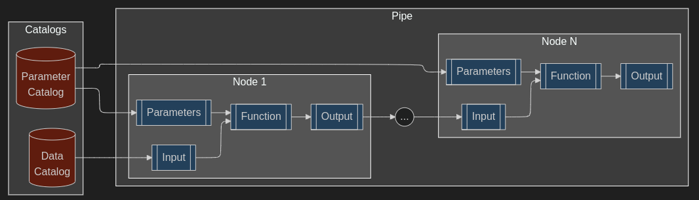

Core Concepts#
NeuroFlow pipelines are designed for modularity and scaleability, and are built upon four fundamental core components: the Data Catalog, the Parameter Catalog, Nodes, and Pipes. These components provide a structured approach to data processing and analysis, as outlined below.

Data Catalog#
The Data Catalog serves as the central repository for defining and managing all data sources used within the pipeline. It acts as a comprehensive map, outlining the structure, location, and metadata of both input and output datasets.
Key information stored in the data catalog:
Data role: Defines whether the data is an input to the pipeline or an output produced by it.
Requires configuration: Determines whether the user needs to configure details about the data (e.g. its location).
Data modality: Defines the data format, which is used to determine how to load or export the data.
Data type: Defines whether the data is a single file or a folder of multiple files to be iterated over.
Data extension: Defines the file extension for the data to help locate relevant files (in the case of a data folder than contains several filetypes).
Parameter Catalog#
The Parameter Catalog allows users to control the pipeline’s behavior at runtime. It stores all configurable parameters for an analysis, allowing for dynamic adjustments without requiring code modifications. Parameter types include file patterns and parameter-value pairs:
File patterns#
A file pattern is a structured way of organizing information within the name of a file. It is a convention that allows you to embed key pieces of metadata directly into the filename itself. This allows for the organization of large numbers of files and making them easier to sort, search, and manage.
File pattern elements are the individual pieces of metadata and the NeuroFlow convention is to separate elements by
an underscore (_). Examples of elements that are recognized by NeuroFlow are:
site: The site at which the data collection occurred.
subject: The subject identifier.
session: The data collection session identifier.
trial: The trial number.
sensor: The unique sensor identifier or worn sensor location (for multi-set sensors like IMUs).
For example, a data file named siteUW_sub001_IMUChest.cwa would have a corresponding file pattern of [site]_[subject]_[sensor].cwa.
Tip
As a rule of thumb when setting a filenaming convention for your project, include the necessary elements so that if all the data was placed in a single folder, the contents of each file could still be easily and uniquely identified.
In the example above, it can be assumed that multiple sites, subjects, and sensors were involved in the data collection - hence the need for those elements in the filename.
When dealing with input data folders, NeuroFlow will expect a file pattern for each data type to help uniquely identify data files and match across different data modalities as needed. During parameter configuration, you will be asked to identify each element in the corresponding filename.
Parameter-value pairs#
Parameter-value pairs is a setting that controls some aspect of a processing pipeline. For example, filter cutoff frequencies, thresholds for step detection, or a True/False toggle for normalizing data.
When setting parameter-value pairs, NeuroFlow will prompt you with the use of default values or to override defaults by setting your own values.
Nodes#
Nodes represent individual, self-contained processing functions within the pipeline. Each node performs a specific task, such as data parsing, filtering, aggregation, or exporting. Nodes are designed to be modular and reusable, promoting code maintainability and efficiency.
The source code for nodes can be either be found in the neuroflow package documentation or
by using the interactive Viz tool (see Using the Viz tool for details).
Pipes#
Pipes are defined by a sequence of individual node operations that transform input data into desired outputs.
Each node in the pipe interacts with the Data/Parameter Catalog as well as the preceding node to receive inputs and then produce outputs which are passed onto the next node.
Now that you have an understanding of the overall NeuroFlow structure and terminology, feel free to get started by creating your first project or look over the Tutorials section for step-by-step examples on how to use NeuroFlow.